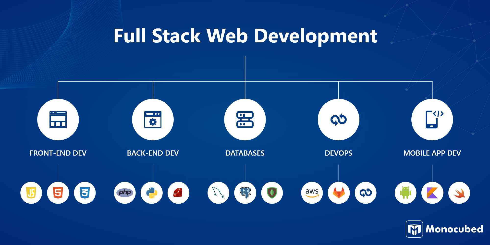

Tecnologías para ser Full-Stack Developer - Roadmap Completo
Como ya os explicamos en el anterior post, un desarrollador Full-Stack debe poder estar involucrado en todas las partes que componen una aplicación web. Esto significa, que debe controlar todos los aspectos del funcionamiento de la herramienta, desde las dos vertientes principales: el Frontend y el Backend. Este doble conocimiento le va a facilitar su tarea diaria y un mejor seguimiento y supervisión del proyecto, ya que va a poder evaluar desde un prisma completo, si una funcionalidad va a ser fácil de aplicar o por el contrario llevará más recursos de lo habitual el poder desarrollarla.
Una vez visto lo anterior, vamos a separar las tecnologías que debe controlar todo desollador Full-Stack dependiendo del ámbito al que aplique.
